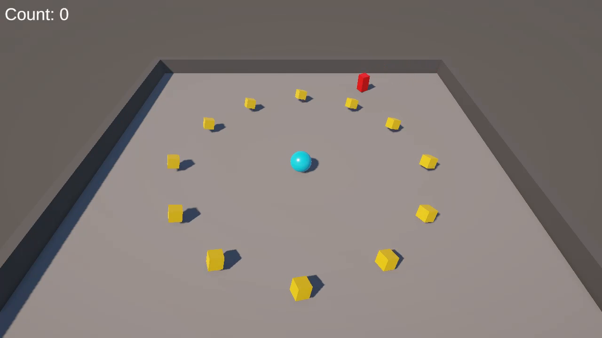
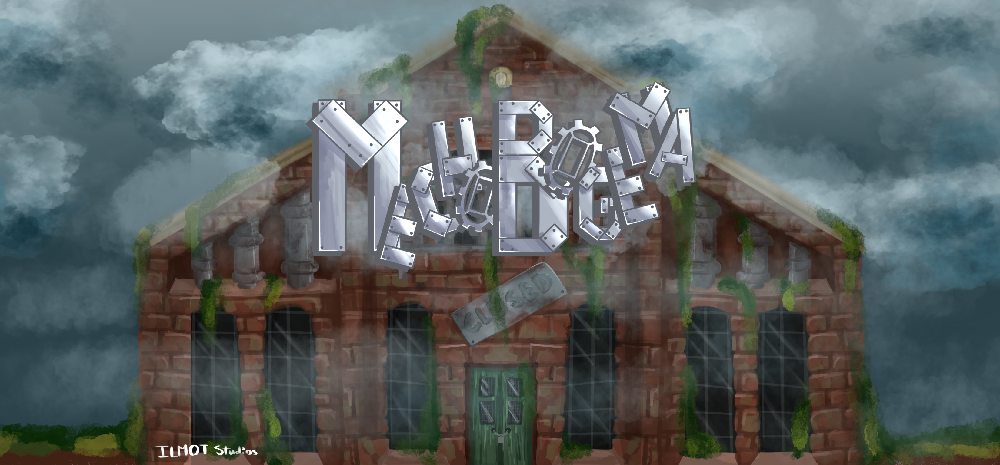
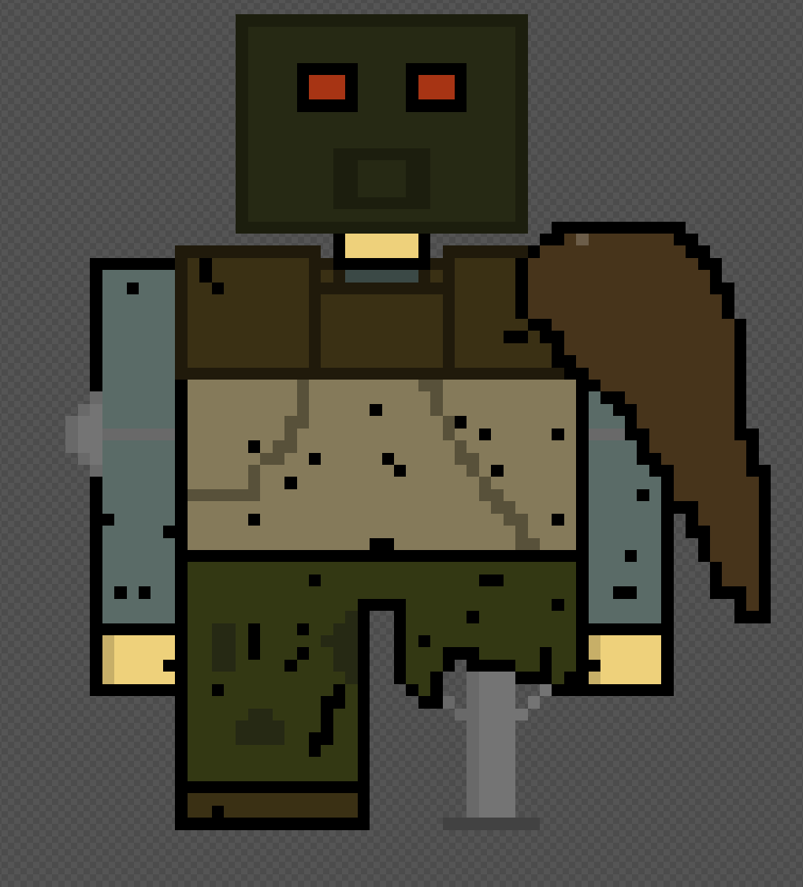

My Projects
Projects
I have worked on during my time at Ontario Tech
1. Art Portfolio (Behance)
This is a culmination of all the digital art I did when I was in Game Development a few years back. Also has a few comic pages I created for term assessments.
2. Rolling Ball
A simple game I made in Unity where you roll a ball to collect points. Has player movement, player detection, scoring system, etc.

3. Mechabogema
Platformer game I made in Unity with a good team for a final in Game Development. Has levels and gravity features.

4. Junkyard Jumpers
Platformer game I made in Unity with a team for a midterm in Game Development. Despite internal differences, we delivered a working prototype with player movement and platform physics.
